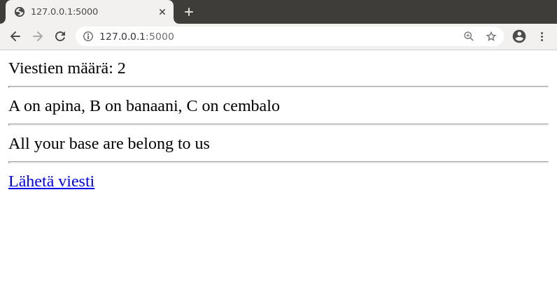
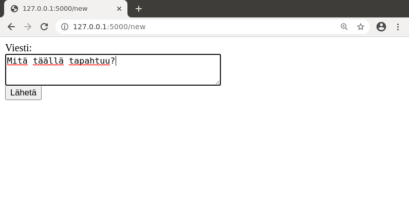
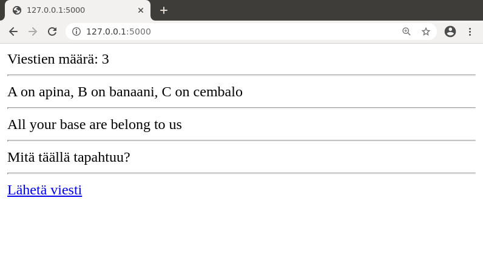
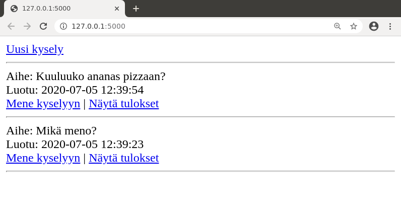
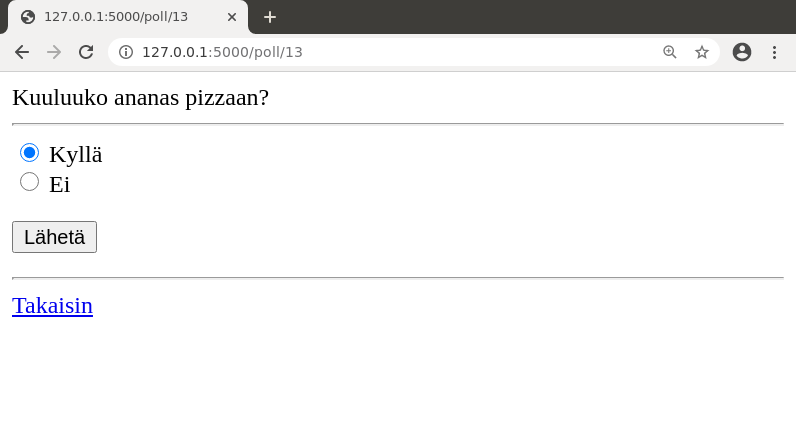
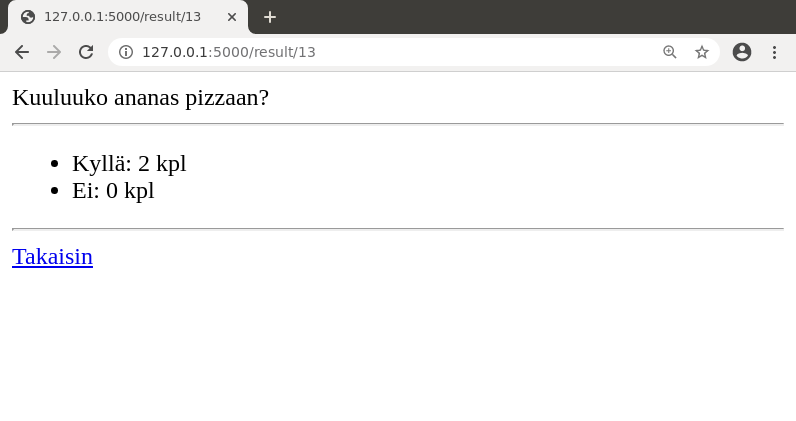
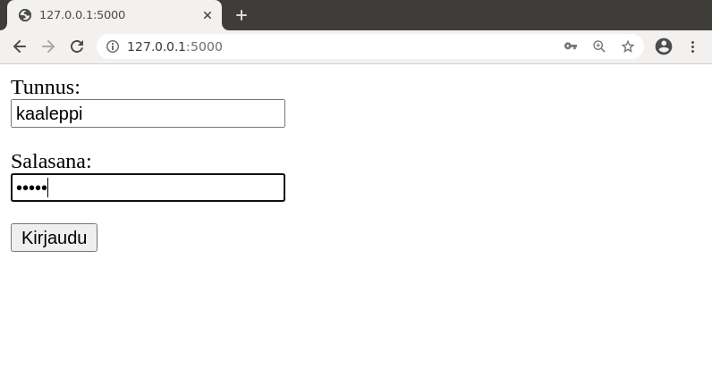
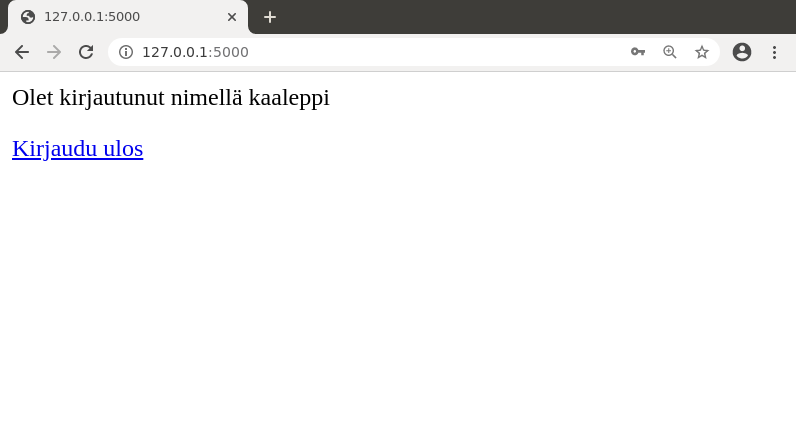

Osa 2
Käytämme kurssilla PostgreSQL-tietokantaa, joka on suosittu avoimen lähdekoodin tietokantajärjestelmä. Tämä osa käsittelee tietokannan käyttöönottoa sekä SQL-komentojen suorittamista web-sovelluksessa.
PostgreSQL on erilainen tietokanta kuin kurssilla Tietokantojen perusteet käytetty tietokanta SQLite. Tämän kurssin kannalta erot ovat kuitenkin pieniä. Taustamateriaalissa on vertailu SQLite vs. PostgreSQL, joka antaa yhteenvedon tietokantojen eroista.
Tietokannan käyttäminen
PostgreSQL:n asennus
Jotta voit kehittää sovellusta, sinun täytyy asentaa koneellesi PostgreSQL-tietokanta.
Voit asentaa PostgreSQL:n Linuxiin käyttäen asennusskriptiä, joka on tehty tätä kurssia varten. Skripti asentaa PostgreSQL:n käyttäjän kotihakemistoon ja on tarkoitettu erityisesti käytettäväksi tietojenkäsittelytieteen osaston fuksiläppäreissä ja mikroluokissa. Saatavilla on myös video, joka näyttää asennuksen vaiheet ja esimerkin tietokannan käyttämisestä.
Voit myös asentaa PostgreSQL:n pääkäyttäjänä käyttöjärjestelmäsi pakettienhallinnan kautta, käyttää Dockeria tai vastaavaa alustaa tai ladata asennuspaketin itse. Ohjeita asennukseen eri järjestelmiin on PostgreSQL:n sivulla.
Macilla helppo tapa saada PostgreSQL käyttöön on Postgres.app.
PostgreSQL-tulkki
Tietokannan asennuksen jälkeen komento psql avaa PostgreSQL-tulkin, jonka avulla voi suorittaa SQL-komentoja komentorivillä. Esimerkiksi voimme luoda seuraavasti taulun messages, lisätä sinne kolme riviä ja hakea sitten kaikki rivit taulusta:
$ psql
user=# CREATE TABLE messages (id SERIAL PRIMARY KEY, content TEXT);
CREATE TABLE
user=# INSERT INTO messages (content) VALUES ('moikka');
INSERT 0 1
user=# INSERT INTO messages (content) VALUES ('apina banaani cembalo');
INSERT 0 1
user=# INSERT INTO messages (content) VALUES ('kolmas viesti');
INSERT 0 1
user=# SELECT * FROM messages;
id | content
----+-----------------------
1 | moikka
2 | apina banaani cembalo
3 | kolmas viesti
(3 rows)
Rivien alussa oleva user on tietokoneen käyttäjän tunnus, jonka kautta tietokantaa käytetään. Tässä materiaalissa käytetään esimerkkinä tunnusta user, mutta omalla koneellasi se on todennäköisesti jokin muu.
PostgreSQL:ssä tyyppi SERIAL tarkoittaa taulun avaimena käytettävää kokonaislukua, joka kasvaa automaattisesti, kun tauluun lisätään uusia rivejä.
Hyödyllisiä PostgreSQL-tulkin komentoja ovat \dt, joka näyttää listan tauluista, sekä \d [taulu], joka näyttää taulun sarakkeet ja muuta tietoa siitä.
user=# \dt
List of relations
Schema | Name | Type | Owner
--------+----------+-------+-------
public | messages | table | user
(1 row)
user=# \d messages
Table "public.messages"
Column | Type | Collation | Nullable | Default
---------+---------+-----------+----------+--------------------------------------
id | integer | | not null | nextval('messages_id_seq'::regclass)
content | text | | |
Indexes:
"messages_pkey" PRIMARY KEY, btree (id)
Komento \q poistuu PostgreSQL-tulkista:
user=# \q
$
Tietokantayhteys sovelluksesta
Jotta voimme käyttää tietokantaa Flask-sovelluksessa, asennamme pari kirjastoa lisää:
(venv) $ pip install flask-sqlalchemy
(venv) $ pip install psycopg2
Ensimmäinen kirjasto flask-sqlalchemy on SQLAlchemy-rajapinta, jonka kautta voi käyttää tietokantaa Flaskissa. Toinen kirjasto psycopg2 puolestaan mahdollistaa yhteyden muodostamisen PostgreSQL-tietokantaan.
Jos sinulla on ongelmia saada kirjasto psycopg2 toimimaan, voit kokeilla asentaa sen sijaan kirjaston psycopg2-binary, jolla on vähemmän riippuvuuksia.
Jotta sovellus saa yhteyden tietokantaan, sen täytyy tietää tietokannan osoite. Tässä materiaalissa käytämme osoitetta muodossa postgresql:///user, missä user on käytettävän tietokannan nimi ja näkyy myös PostgreSQL-tulkissa rivien alussa. Tietokannan nimi on siis tässä sama kuin käyttäjän tunnus.
Huomaa, että vaadittu tapa antaa tietokannan osoite riippuu siitä, mikä järjestelmä on käytössä ja miten PostgreSQL on asennettu. Jos asensit PostgreSQL:n tämän kurssin asennusskriptillä, voit käyttää osoitetta postgresql+psycopg2://. Lisää tietoa tietokannan osoitteen muodostumisesta on PostgreSQL:n dokumentaatiossa
Seuraavassa on yksinkertainen sovellus, joka testaa tietokantayhteyttä. Sovellus olettaa, että tietokannassa on äsken luomamme messages-taulu.
app.py
from flask import Flask
from flask import redirect, render_template, request
from flask_sqlalchemy import SQLAlchemy
app = Flask(__name__)
app.config["SQLALCHEMY_DATABASE_URI"] = "postgresql:///user"
db = SQLAlchemy(app)
@app.route("/")
def index():
result = db.session.execute("SELECT content FROM messages")
messages = result.fetchall()
return render_template("index.html", count=len(messages), messages=messages)
@app.route("/new")
def new():
return render_template("new.html")
@app.route("/send", methods=["POST"])
def send():
content = request.form["content"]
sql = "INSERT INTO messages (content) VALUES (:content)"
db.session.execute(sql, {"content":content})
db.session.commit()
return redirect("/")
index.html
Viestien määrä: {{ count }}
<hr>
{% for message in messages %}
{{ message.content }}
<hr>
{% endfor %}
<a href="/new">Lähetä viesti</a>
new.html
<form action="/send" method="POST">
Viesti: <br>
<textarea name="content" rows="3" cols="40"></textarea>
<br>
<input type="submit" value="Lähetä">
</form>
Huomaa, että yllä oleva koodi ei välttämättä toimi SQLALchemy-kirjaston uusissa versioissa. Jos koodi ei toimi, kokeile lisätä koodin alkuun
from sqlalchemy.sql import text
sekä execute-funktion kutsuissa SQL-komennon ympärille funktio text seuraavaan tapaan:
result = db.session.execute(text("SELECT content FROM messages"))
Sovelluksen käyttäminen voi näyttää tältä:



Katsotaan vielä tarkemmin joitakin kohtia koodista:
app.config["SQLALCHEMY_DATABASE_URI"] = "postgresql:///user"
db = SQLAlchemy(app)
Tämä koodi määrittelee osoitteen, jonka kautta tietokantaan saadaan yhteys, sekä luo db-olion, jonka avulla sovellus voi suorittaa SQL-komentoja.
result = db.session.execute("SELECT content FROM messages")
messages = result.fetchall()
Tämä koodi suorittaa kyselyn, joka hakee kaikki taulussa olevat viestit. Metodi fetchall antaa listan, jonka jokainen alkio on yhden rivin sisältö. Sivupohjassa message.content näyttää rivin sarakkeen content arvon eli viestin sisällön.
sql = "INSERT INTO messages (content) VALUES (:content)"
db.session.execute(sql, {"content":content})
db.session.commit()
return redirect("/")
Tämä koodi lisää tietokantaan uuden rivin, kun käyttäjä on lähettänyt viestin lomakkeella.
Käyttäjän antama syöte yhdistetään SQL-komentoon parametrina, jolla on tietty nimi, tässä tapauksessa content. SQL-komennossa ennen parametrin nimeä on kaksoispiste. Parametrin käyttäminen on turvallinen tapa yhdistää käytäjän antamaa tietoa SQL-komentoon, koska tällöin tiedon yhdistäminen ei voi muuttaa kyselyn rakennetta eikä SQL-injektio ole mahdollinen.
Huomaa, että sovelluksen tekemät SQL-komennot suoritetaan automaattisesti transaktion sisällä. Kun sovellus tekee muutoksia tietokantaan, muutosten jälkeen täytyy kutsua metodia commit, jotta transaktio viedään loppuun ja muutokset menevät pysyvästi tietokantaan.
Funktio redirect ohjaa käyttäjän toiselle sivulle. Tässä tapauksessa viestin lähetyksen jälkeen siirrytään takaisin etusivulle. Tämän tavan etuna on, että käyttäjä ei voi vahingossa lähettää lomaketta uudestaan, jos hän lataa sivun uudestaan. Tämä on hyvin yleinen toteutustapa web-ohjelmoinnissa, ja siitä käytetään joskus nimeä PRG-malli (Post/Redirect/Get).
Kyselyn tulosten hakeminen
Kaksi tavallista metodia kyselyn tulosten hakemiseen ovat fetchall ja fetchone. Metodi fetchall hakee kaikki kyselyn antamat rivit listana, kuten teimme äskeisessä esimerkissä, kun taas metodi fetchone hakee vain yhden (ensimmäisen) rivin. Metodi fetchone on hyödyllinen silloin, kun kysely palauttaa varmasti tarkalleen yhden rivin.
Molemmissa metodeissa yksittäisen rivin sisältö on olio, josta voidaan hakea tietyn sarakkeen sisältö useilla tavoilla:
row[i]: hakee sarakkeenisisällön (0-indeksoituna)row.name: hakee sarakkeennamesisällönrow["name"]: hakee sarakkeennamesisällön
Esimerkiksi seuraava koodi näyttää kolme tapaa hakea rivit metodilla fetchall ja tulostaa sarakkeiden id ja content arvot joka riviltä.
result = db.session.execute("SELECT id, content FROM messages")
messages = result.fetchall()
for message in messages:
print(message[0], message[1])
for message in messages:
print(message.id, message.content)
for message in messages:
print(message["id"], message["content"])
Seuraava koodi puolestaan hakee rivien lukumäärän funktion COUNT avulla. Koska kysely palauttaa aina tasan yhden rivin, on luontevaa käyttää metodia fetchone.
result = db.session.execute("SELECT COUNT(*) FROM messages")
row = result.fetchone()
print(row[0])
print(row.count)
print(row["count"])
Rivin sarakkeen sisällön hakemiseen on siis kolme erilaista syntaksia, ja on makuasia, mitä niistä käyttää milloinkin. Sarakkeen indeksin perusteella hakemisessa etuna on, että indeksointi tapahtuu aina samalla tavalla. Muut tavat ovat helpompia lukea, mutta voi olla epäselvää, mikä on tulostaulun sarakkeen nimi. Esimerkiksi äskeisessä koodissa piti tietää tai arvata, että funktiosta COUNT(*) tulee tulostauluun sarake count.
Ympäristömuuttujat
Käytännössä ei ole hyvä tapa kovakoodata tietokannan osoitetta sovelluksen koodiin, vaan parempi tapa on välittää tämä tieto ympäristömuuttujan kautta. Tässä tapauksessa voimme päättää, että ympäristömuuttuja DATABASE_URL ilmaisee tietokannan osoitteen.
Yksi tapa määritellä ympäristömuuttuja olisi käyttää komentoa export seuraavasti ennen sovelluksen käynnistämistä:
(venv) $ export DATABASE_URL=postgresql:///user
(venv) $ flask run
Kuitenkin kätevämpi tapa on ottaa käyttöön kirjasto python-dotenv:
(venv) $ pip install python-dotenv
Kun kirjasto on asennettu, Flask osaa käyttää sitä automaattisesti. Tämän ansiosta voimme luoda tiedoston .env, jossa on määritelty ympäristömuuttujat:
DATABASE_URL=postgresql:///user
Tämän etuna on, että ennen sovelluksen käynnistämistä ei tarvitse suorittaa export-komentoa vaan ympäristömuuttujat ovat aina tallessa tiedostossa.
Voimme hakea ympäristömuuttujan arvon sovellukseen näin:
from os import getenv
app.config["SQLALCHEMY_DATABASE_URI"] = getenv("DATABASE_URL")
Tästä lähtien oletamme, että ympäristömuuttuja DATABASE_URL kertoo tietokannan osoitteen. Tämä tieto voi olla ympäristöstä riippuen tiedostossa .env tai määritetty muulla tavalla.
SQLAlchemyn varoitus
Kun sovelluksessa käytetään tietokantaa SQLAlchemyn kautta, sovelluksen käynnistäminen saattaa antaa seuraavan varoituksen:
FSADeprecationWarning: SQLALCHEMY_TRACK_MODIFICATIONS adds significant overhead and will be disabled by default in the future. Set it to True or False to suppress this warning.
Tässä projektissa tämä ei haittaa sinänsä, mutta jos haluat päästä varoituksesta eroon, voit lisätä koodiin seuraavan rivin:
app.config["SQLALCHEMY_TRACK_MODIFICATIONS"] = False
Lisää tietoa varoituksen syystä löydät Stack Overflow’n keskustelusta.
Esimerkki: Kyselyt
Teemme seuraavaksi hieman laajemman esimerkkisovelluksen, joka esittelee tietokannan käyttämiseen liittyviä tekniikoita. Sovelluksessa käyttäjät voivat luoda kyselyitä sekä vastata muiden luomiin kyselyihin. Sovelluksen käyttäminen näyttää tältä:



Sovelluksen koko lähdekoodi on GitHubissa osoitteessa https://github.com/hy-tsoha/tsoha-polls, ja käymme tässä tarkemmin läpi sovelluksen toimintaa.
Sovellusta varten luomme tietokantaan kolme taulua:
CREATE TABLE polls (
id SERIAL PRIMARY KEY,
topic TEXT,
created_at TIMESTAMP
);
CREATE TABLE choices (
id SERIAL PRIMARY KEY,
poll_id INTEGER REFERENCES polls,
choice TEXT
);
CREATE TABLE answers (
id SERIAL PRIMARY KEY,
choice_id INTEGER REFERENCES choices,
sent_at TIMESTAMP
);
Taulu polls sisältää jokaisen kyselyn aiheen ja luontiajan, ja tauluun choices tallennetaan kunkin kyselyn vastausvaihtoehdot. Taulussa answers on puolestaan kyselyihin annetut vastaukset ja niiden lähetysajat.
Sovelluksen etusivu näyttää kyselyt käänteisessä aikajärjestyksessä:
app.py
@app.route("/")
def index():
sql = "SELECT id, topic, created_at FROM polls ORDER BY id DESC"
result = db.session.execute(sql)
polls = result.fetchall()
return render_template("index.html", polls=polls)
index.html
<a href="/new">Uusi kysely</a>
<hr>
{% for poll in polls %}
Aihe: {{ poll.topic }} <br>
Luotu: {{ poll.created_at.strftime("%Y-%m-%d %H:%M:%S") }} <br>
<a href="/poll/{{ poll.id }}">Mene kyselyyn</a> |
<a href="/result/{{ poll.id }}">Näytä tulokset</a> <br>
<hr>
{% endfor %}
Tässä tietokannasta haetaan jokaisen kyselyn id-numero, aihe ja luontiaika. Sivupohjassa id-numeron perusteella luodaan kaksi linkkiä: sivu poll/[id] antaa käyttäjän vastata kyselyyn ja sivu result/[id] puolestaan näyttää kyselyn tulokset.
Sivu new näyttää lomakkeen, jonka kautta voi lähettää uuden kyselyn.
Käyttäjä antaa lomakkeeseen kyselyn aiheen sekä enintään neljä
vastausvaihtoehtoa:
app.py
@app.route("/new")
def new():
return render_template("new.html")
new.html
<form action="/create" method="POST">
<p>Aihe:<br>
<input type="text" name="topic"></p>
<p>Vaihtoehto 1:<br>
<input type="text" name="choice"></p>
<p>Vaihtoehto 2:<br>
<input type="text" name="choice"></p>
<p>Vaihtoehto 3:<br>
<input type="text" name="choice"></p>
<p>Vaihtoehto 4:<br>
<input type="text" name="choice"></p>
<input type="submit" value="Luo kysely">
</form>
Kun käyttäjä lähettää lomakkeen, sen käsittelee funktio create:
app.py
@app.route("/create", methods=["POST"])
def create():
topic = request.form["topic"]
sql = "INSERT INTO polls (topic, created_at) VALUES (:topic, NOW()) RETURNING id"
result = db.session.execute(sql, {"topic":topic})
poll_id = result.fetchone()[0]
choices = request.form.getlist("choice")
for choice in choices:
if choice != "":
sql = "INSERT INTO choices (poll_id, choice) VALUES (:poll_id, :choice)"
db.session.execute(sql, {"poll_id":poll_id, "choice":choice})
db.session.commit()
return redirect("/")
Tämä funktio lisää ensin kyselyä vastaavan rivin tauluun polls. Kyselyn aihe tulee käyttäjältä ja SQL-funktio NOW() antaa nykyisen ajanhetken. Komennon INSERT lopussa on RETURNING id, minkä ansiosta komento palauttaa lisätyn rivin id-numeron.
Tämän jälkeen käydään läpi käyttäjän antamat vastausvaihtoehdot. Koska lomakkeessa on useita choice-kenttiä, niiden sisältö haetaan listana metodilla getlist. Jokaisesta epätyhjästä vaihtoehdosta luodaan rivi tauluun choices, ja lopuksi käyttäjä ohjataan etusivulle.
Sivu poll/[id] näyttää kyselyn sen id-numeron perusteella. Sivulla on lomake, jonka kautta käyttäjä voi vastata kyselyyn:
app.py
@app.route("/poll/<int:id>")
def poll(id):
sql = "SELECT topic FROM polls WHERE id=:id"
result = db.session.execute(sql, {"id":id})
topic = result.fetchone()[0]
sql = "SELECT id, choice FROM choices WHERE poll_id=:id"
result = db.session.execute(sql, {"id":id})
choices = result.fetchall()
return render_template("poll.html", id=id, topic=topic, choices=choices)
poll.html
{{ topic }}
<hr>
<form action="/answer" method="POST">
{% for choice in choices %}
<input type="radio" name="answer" value="{{ choice.id }}"> {{ choice.choice }} <br>
{% endfor %}
<p>
<input type="submit" value="Lähetä">
<input type="hidden" name="id" value="{{ id }}">
</form>
<hr>
<a href="/">Takaisin</a>
Lomake antaa käyttäjän valita yhden vaihtoehdoista, ja lisäksi lomakkeessa on käyttäjälle näkymätön piilokenttä, jossa on kyselyn id-numero. Tämän kentän avulla lomakkeen käsittelijä tietää, mihin kyselyyn käyttäjän antama vastaus liittyy.
Funktio answer käsittelee käyttäjän antaman vastauksen:
app.py
@app.route("/answer", methods=["POST"])
def answer():
poll_id = request.form["id"]
if "answer" in request.form:
choice_id = request.form["answer"]
sql = "INSERT INTO answers (choice_id, sent_at) VALUES (:choice_id, NOW())"
db.session.execute(sql, {"choice_id":choice_id})
db.session.commit()
return redirect("/result/" + str(poll_id))
Funktio hakee kyselyn id-numeron piilokentästä ja tarkastaa sitten, onko käyttäjä valinnut jonkin vastauksen. Jos käyttäjä on valinnut vastauksen, tämä vastaus lisätään answers-tauluun. Lopuksi käyttäjä ohjataan kyselyn tuloksiin.
Sivu result/[id] näyttää kyselyn tulokset:
app.py
@app.route("/result/<int:id>")
def result(id):
sql = "SELECT topic FROM polls WHERE id=:id"
result = db.session.execute(sql, {"id":id})
topic = result.fetchone()[0]
sql = "SELECT c.choice, COUNT(a.id) FROM choices c LEFT JOIN answers a " \
"ON c.id=a.choice_id WHERE c.poll_id=:poll_id GROUP BY c.id"
result = db.session.execute(sql, {"poll_id":id})
choices = result.fetchall()
return render_template("result.html", topic=topic, choices=choices)
result.html
{{ topic }}
<hr>
<ul>
{% for choice in choices %}
<li> {{ choice.choice }}: {{ choice.count }} kpl
{% endfor %}
</ul>
<hr>
<a href="/">Takaisin</a>
Tämän sivun perustana on tauluista choices ja answers tietoa hakeva kysely, joka hakee jokaisesta kyselyn vastausvaihtoehdosta vastausten määrän. Kyselyssä on käytössä LEFT JOIN, jotta mukaan tulevat myös vaihtoehdot, joissa ei ole yhtään vastausta. Koska kysely on pitkä, se on jaettu kahdelle riville merkin \ avulla.
Istunnot ja kirjautuminen
Useimmissa web-sovelluksissa on mahdollista kirjautua sisään antamalla tunnus ja salasana, minkä jälkeen pääsee tekemään jotain erityistä. Kirjautuminen vaatii, että tietoa säilyy sovelluksessa sivulta toiselle, ja tämä onnistuu istunnon (session) avulla.
Ideana on, että voimme tallentaa istuntoon avain-arvo-pareja, jotka säilyvät muistissa sivulta toiselle. Flask toteuttaa istunnon session-oliona, jonka tiedot tallennetaan selaimelle lähetettävään evästeeseen (cookie). Esimerkiksi seuraava koodi tallentaa istuntoon tiedon, että avaimen test arvo on aybabtu.
session["test"] = "aybabtu"
Tämän jälkeen voimme hakea avaimen arvon toisessa sivupyynnössä näin:
value = session["test"] # aybabtu
Istunnon käyttäminen vaatii, että sovelluksessa on käytössä salainen avain. Lisäämme satunnaisesti muodostetun salaisen avaimen .env-tiedostoon:
SECRET_KEY=95d3763bb55e744e77dd181a47b4e1c6
Tämä avain allekirjoittaa evästeessä olevan tiedon niin, että käyttäjä ei pysty muuttamaan istunnon sisältöä selaimessa. On tärkeää, että avain on salainen, eli älä missään tapauksessa käytä yllä olevaa avainta vaan luo oma salainen avain!
Oman salaisen avaimen voi luoda vaikkapa Python-tulkin avulla. Esimerkiksi moduulin secrets funktio token_hex antaa halutun määrän satunnaisia tavuja.
$ python3
>>> import secrets
>>> secrets.token_hex(16)
'18fd24bf6a2ad4dac04a33963db1c42f'
Huomaa, että evästeen allekirjoittaminen salaisella avaimella estää käyttäjää muuttamasta istunnon sisältöä mutta ei estä tallennetun tiedon katsomista selaimessa.Tämän vuoksi istuntoon ei saa tallentaa mitään salaista tietoa. Jos haluat tietää lisää Flaskin istuntojen turvallisuudesta, löydät lisää asiasta Miguel Grinbergin blogista.
Kirjautumisen toteutus
Seuraava sovellus antaa näytteen kirjautumisen toteuttamisesta:
from flask import Flask
from flask import redirect, render_template, request, session
from os import getenv
app = Flask(__name__)
app.secret_key = getenv("SECRET_KEY")
@app.route("/")
def index():
return render_template("index.html")
@app.route("/login",methods=["POST"])
def login():
username = request.form["username"]
password = request.form["password"]
# TODO: check username and password
session["username"] = username
return redirect("/")
@app.route("/logout")
def logout():
del session["username"]
return redirect("/")
Sovellus käyttää seuraavaa sivupohjaa index.html, joka joko näyttää kirjautumislomakkeen tai kertoo, että käyttäjä on sisällä:
{% if session.username %}
<p>Olet kirjautunut nimellä {{ session.username }}</p>
<a href="/logout">Kirjaudu ulos</a>
{% else %}
<form action="/login" method="POST">
<p>Tunnus:<br>
<input type="text" name="username"></p>
<p>Salasana:<br>
<input type="password" name="password"></p>
<input type="submit" value="Kirjaudu">
</form>
{% endif %}
Sovelluksen käyttäminen voi näyttää tältä:


Katsotaan nyt tarkemmin sovelluksen osia:
app.secret_key = getenv("SECRET_KEY")
Tällä rivillä sovellus hakee salaisen avaimen ympäristömuuttujasta SECRET_KEY. Istuntoa ei ole mahdollista käyttää ilman salaista avainta.
{% if session.username %}
<p>Olet kirjautunut nimellä {{ session.username }}</p>
<a href="/logout">Kirjaudu ulos</a>
{% else %}
Sivupohjassa session-olioon pääsee käsiksi yllä olevalla syntaksilla. Jos username on asetettu, käyttäjä näkee tunnuksensa ja linkin, josta painamalla voi kirjautua ulos. Muuten käyttäjä näkee lomakkeen, jonka avulla voi kirjautua sisään.
@app.route("/login",methods=["POST"])
def login():
username = request.form["username"]
password = request.form["password"]
# TODO: check username and password
session["username"] = username
return redirect("/")
Tämä funktio käsittelee kirjautumislomakkeen. Tällä hetkellä funktiosta puuttuu vielä osa (TODO-kohta), joka varmistaa, että käyttäjä antaa oikean tunnuksen ja salasanan. Niinpä sovellus hyväksyy minkä tahansa tunnuksen ja salasanan.
@app.route("/logout")
def logout():
del session["username"]
return redirect("/")
Tämä funktio kirjaa käyttäjän ulos poistamalla session-rakenteesta avaimen username.
Käyttäjät tietokannassa
Kirjautuminen on järkevää toteuttaa niin, että tiedot käyttäjistä ovat tietokannassa. Voimme käyttää tähän seuraavanlaista taulua:
CREATE TABLE users (id SERIAL PRIMARY KEY, username TEXT, password TEXT);
Tässä tapauksessa käyttäjästä tallennetaan käyttäjätunnus ja salasana. Tämän lisäksi taulussa voisi olla muutakin tietoa, kuten onko käyttäjä peruskäyttäjä vai admin-käyttäjä.
Turvallinen tapa tallentaa salasana tietokantaan on tallentaa salasanan sijasta salasanan hajautusarvo (hash value), jonka avulla voidaan tarkastaa, onko salasana oikea. Voimme käyttää tähän Flaskin mukana tulevaa Werkzeug-kirjastoa:
from werkzeug.security import check_password_hash, generate_password_hash
Esimerkiksi seuraava koodi lisää tietokantaan uuden käyttäjän, jonka tunnus on username ja salasana on password. Koodi laskee salasanan hajautusarvon Werkzeug-kirjaston funktiolla generate_password_hash.
hash_value = generate_password_hash(password)
sql = "INSERT INTO users (username, password) VALUES (:username, :password)"
db.session.execute(sql, {"username":username, "password":hash_value})
db.session.commit()
Seuraava koodi puolestaan tarkastaa, onko käyttäjän antama tunnus ja salasana oikein:
sql = "SELECT id, password FROM users WHERE username=:username"
result = db.session.execute(sql, {"username":username})
user = result.fetchone()
if not user:
# TODO: invalid username
else:
hash_value = user.password
if check_password_hash(hash_value, password):
# TODO: correct username and password
else:
# TODO: invalid password
Koodi hakee tietokannasta käyttäjän antamaa tunnusta vastaavan id-numeron ja salasanan. Jos tietokannasta ei tule riviä (tulos on None), tämä tarkoittaa, että käyttäjää ei ole tietokannassa. Muuten koodi tarkastaa funktiolla check_password_hash, onko salasana oikea.
Salasana näyttää tietokannassa seuraavalta:
user=# SELECT password FROM users WHERE username='maija';
password
------------------------------------------------------------------------------------------------
pbkdf2:sha256:150000$98mnxMjT$cedf43db2f098831ab5f533d814cf094db01540e34251aee3d5afd7d5607fc5a
(1 row)
Tässä tapauksessa käyttäjän “maija” salasana on “kissa”. Salasanasta on tallennettu tietokantaan merkkijono, jonka osana on käytetty hajautusfunktio (tässä sha256), muuta tietoa hajautustavasta ja varsinainen hajautusarvo. Tämän avulla voidaan tarkastaa myöhemmin, onko käyttäjän antama salasana oikea.
Miksi tallentaa salasana hajautusarvona?
Jos jostain syystä hyökkääjä pääsisi käsiksi tietokannan sisältöön ja salasanat olisi tallennettu sellaisenaan, hyökkääjä saisi selville suoraan käyttäjien salasanat. Moni käyttää samoja tai samantapaisia salasanoja eri palveluissa, joten tästä voisi olla huomattava hyöty pahantahtoiselle hyökkääjälle. Salasanan tallentaminen hajautusarvona hidastaa hyökkääjän työtä: jos hyökkääjä haluaa selvittää alkuperäisen salasanan, hänen täytyy käytännössä kokeilla läpi suuri määrä mahdollisia salasanoja ja tarkastaa, antaako jokin niistä oikean hajautusarvon.
Huomaa, että jos hyökkääjä saa käsiinsä tietokannan sisällön, tilanne on jo erittäin paha eikä näin saisi päästä tapahtumaan. Kuitenkin tilanne olisi vielä pahempi, jos salasanat olisi tallennettu tietokantaan sellaisenaan. Toisaalta salasanan tallentaminen hajautusarvona ei auta asiaa, jos salasana on huono eli helposti arvattava tai lyhyt. Tällöin hyökkääjä saa sen joka tapauksessa selville käymällä läpi raa’alla voimalla mahdollisia salasanoja. Käyttäjä on siis aina osittain vastuussa omasta tietoturvastaan.
Vaikka hyökkääjistä ei olisi huolta, ei silti olisi hyvä idea tallentaa salasanoja sellaisenaan, koska tietokannan ylläpitäjä voisi tahattomasti nähdä käyttäjien salasanoja.
Hakutoiminto
Perinteinen periaate web-sovelluksissa on, että GET-metodia käyttävä sivupyyntö hakee tietokannasta tietoa (SELECT-komennoilla), kun taas POST-metodia käyttävä sivupyyntö voi myös muuttaa tietoa (INSERT-, UPDATE- ja DELETE-komennoilla). Toisin sanoen GET-metodi ei muuta tietokannan tilaa, kun taas POST-metodi voi muuttaa sitä.
Olemme tähän mennessä toteuttaneet kaikki lomakkeet POST-metodilla, mikä on luontevaa, koska yleensä lomakkeen lähetys aiheuttaa muutoksia tietokannassa. Kuitenkin joskus on paikallaan GET-metodia käyttävä lomake, joka ei muuta tietokantaa.
Tarkastellaan seuraavaksi tilannetta, jossa haluamme toteuttaa sovellukseen hakutoiminnon. Ideana on, että käyttäjä voi antaa lomakkeella hakusanan, minkä jälkeen sovellus etsii tietokannasta kaikki tähän täsmäävät rivit. Oletamme, että sovelluksessa on taulu messages:
CREATE TABLE messages (id SERIAL PRIMARY KEY, content TEXT);
Käyttäjä pystyy hakemaan tietoa seuraavan lomakkeen kautta, joka on määritelty muuten samaan tyyliin kuin aiemmin, mutta metodina on GET eikä POST:
<form action="/result" method="GET">
Hakusana: <input type="text" name="query">
<br>
<input type="submit" value="Lähetä">
</form>
Seuraava sivu käsittelee lomakkeen:
@app.route("/result")
def result():
query = request.args["query"]
sql = "SELECT id, content FROM messages WHERE content LIKE :query"
result = db.session.execute(sql, {"query":"%"+query+"%"})
messages = result.fetchall()
return render_template("result.html", messages=messages)
Kun käytössä on GET-metodi, lomakkeen sisältö välitetään sivun osoitteen mukana. Esimerkiksi kun käyttäjä hakee sanalla “kissa”, sivun osoite on /result?query=kissa. Tämä tarkoittaa myös, että käyttäjä voi tehdä helposti hakuja myös ilman lomaketta muuttamalla osoitetta.
Lomakkeen käsittelyssä GET-metodilla lähetetty tieto on saatavilla request.args-olion kautta. Yllä oleva koodi muodostaa SQL-kyselyn, jossa hakuehdossa on LIKE-operaattori eli riittää, että hakusana esiintyy jossain kohtaa viestin sisältöä. Esimerkiksi kun hakusana on kissa, ehdoksi tulee content LIKE '%kissa%'.
Koska kyseessä on GET-metodi, lomakkeen käsittelijän alussa ei tarvitse ilmoittaa metodia, koska Flaskissa oletusmetodi on GET. Silti voisimme halutessamme merkitä selkeyden vuoksi myös GET-metodin samaan tapaan kuin ennen:
@app.route("/result", methods=["GET"])
def result():
...
Huomaa, että on vain käytäntö, että GET-metodi ei muuta tietokannan sisältöä. Metodista riippumatta sivupyynnön käsittelijä voi suorittaa mitä tahansa SQL-komentoja.
Koska GET-metodia käyttäessä lomakkeen tiedot välitetään sivun osoitteen kautta, tiedoista jää kopioita palvelinten lokitiedostoihin. Lisäksi selain voi säilyttää GET-pyyntöjen vastaukset välimuistissaan, mutta POST-pyyntöjen vastauksia ei yleensä säilytetä.
Tiedon poistaminen
Tiedon poistaminen tietokannasta ei ole välttämättä niin helppoa kuin voisi ajatella. Tarkastellaan esimerkkisovelluksen taulua polls, jossa on tiedot kyselyistä:
user=# SELECT * FROM polls;
id | topic | created_at
----+--------------------------+----------------------------
1 | Mikä meno? | 2020-07-05 12:39:23.456712
2 | Kuuluuko ananas pizzaan? | 2020-07-05 12:39:54.02045
(2 rows)
Yritys poistaa rivi DELETE-komennolla epäonnistuu:
user=# DELETE FROM polls WHERE id=2;
ERROR: update or delete on table "polls" violates foreign key constraint "choices_poll_id_fkey" on table "choices"
DETAIL: Key (id)=(2) is still referenced from table "choices".
Tässä on ongelmana, että taulusta choices on viittaus taulun polls riviin 2, minkä vuoksi tietokanta ei anna poistaa riviä.
Yksi ratkaisu asiaan olisi määritellä taulun luonnissa tarkemmin ON DELETE -osassa, mitä tapahtuu, kun taulusta poistetaan rivi. Esimerkiksi ON DELETE CASCADE määrittää, että kun rivi poistetaan, niin myös siihen viittaavat rivit poistetaan. Lisätietoa tästä lähestymistavasta on kurssin Tietokantojen perusteet luvussa 7.
Vaihtoehtoinen ratkaisu on toteuttaa rivin poistaminen niin, että tietokannasta ei todellisuudessa poisteta mitään, vaan rivi vain piilotetaan. Tämä onnistuu lisäämällä tauluun sarake, joka ilmaisee rivin näkyvyyden:
user=# SELECT * FROM polls;
id | topic | created_at | visible
----+--------------------------+----------------------------+---------
1 | Mikä meno? | 2020-07-05 12:39:23.456712 | t
2 | Kuuluuko ananas pizzaan? | 2020-07-05 12:39:54.02045 | t
(2 rows)
Tässä BOOLEAN-tyyppinen sarake visible ilmaisee, onko rivi näkyvissä. Tämän sarakkeen arvona on TRUE tai FALSE (PostgreSQL-tulkki näyttää t tai f). Aluksi arvo on TRUE, jolloin rivi on näkyvissä. Sitten kun rivi halutaan poistaa, arvoksi muutetaan FALSE:
user=# UPDATE polls SET visible=FALSE WHERE id=2;
UPDATE 1
Tämän lisäksi sovellusta täytyy muuttaa niin, että se näyttää käyttäjälle tietoa vain riveistä, joissa sarakkeen visible arvo on TRUE.
Tämän ratkaisun etuna on, että UPDATE-komennolla tehtävä näkyvyyden muutos ei vaikuta viittauksiin, minkä ansiosta se onnistuu aina. Lisäksi koska tietokannasta ei poisteta tietoa, piilotettu rivi on helppoa palauttaa muuttamalla saraketta visible.